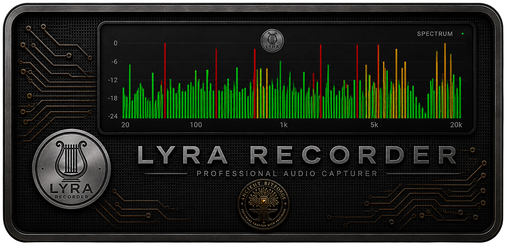
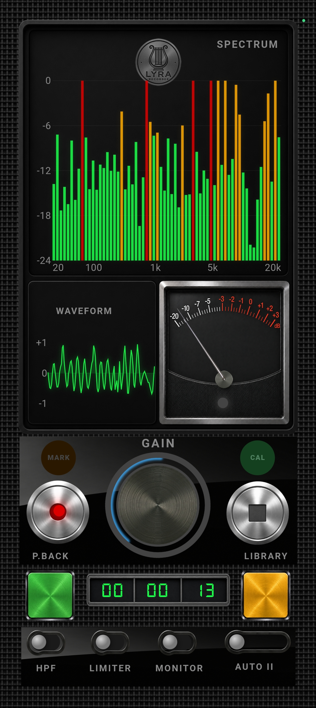
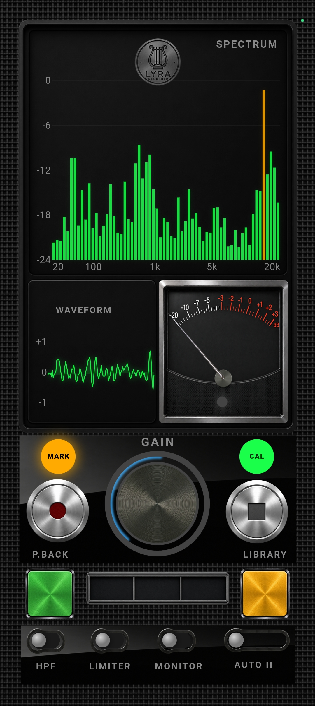
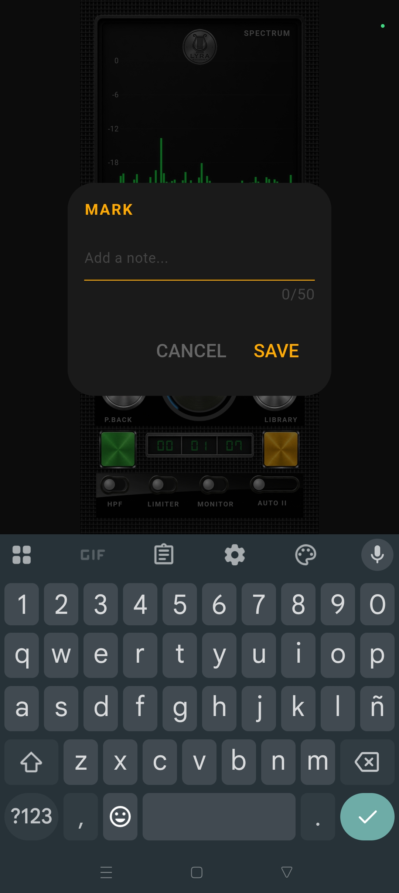
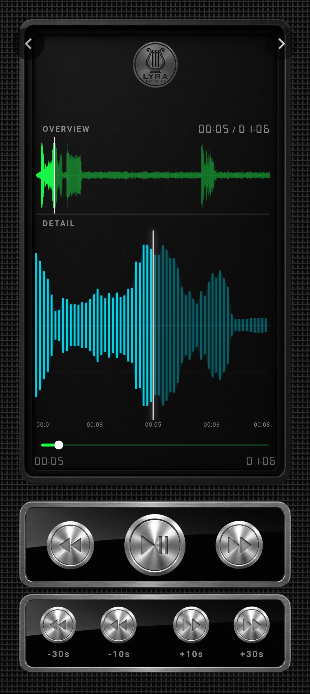
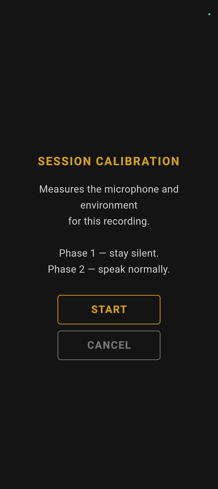
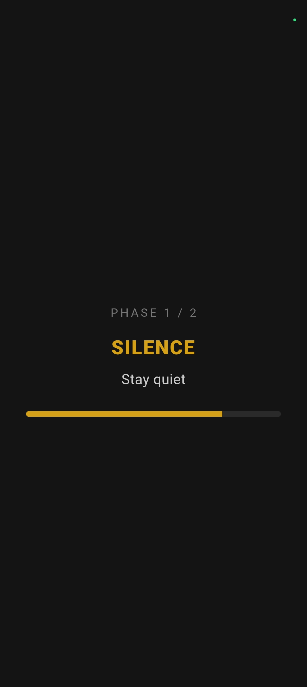
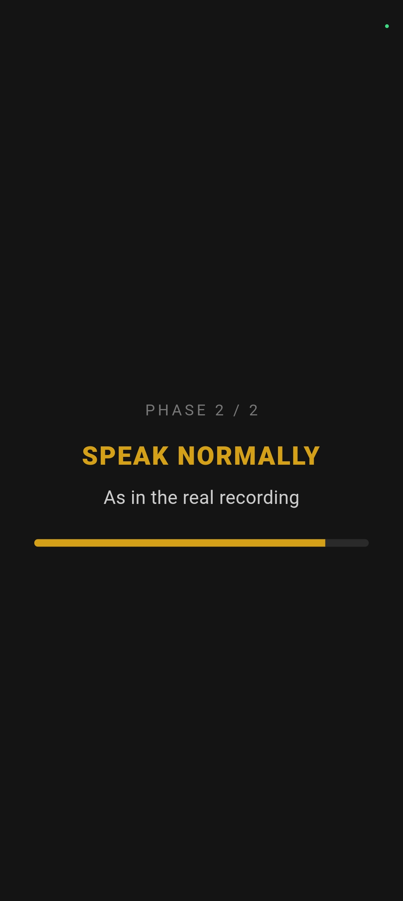
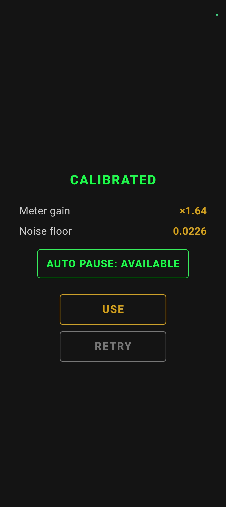
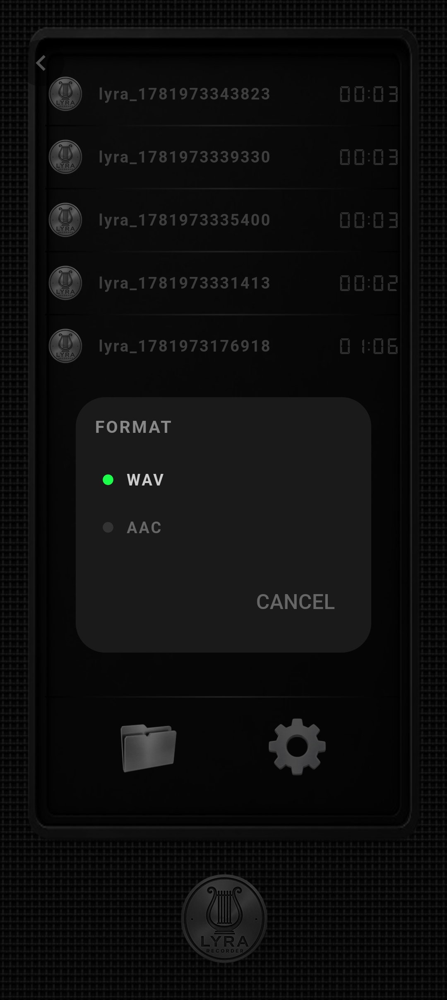

01
Native capture
Recording is handled through the device audio system with direct control over the available capture path.
Professional Capture Instrument
Capture without illusion.

A professional field recorder designed around native audio capture, real metering and direct user control.
Enter the instrumentPurpose
Recording is not the creation of an effect.
It is the disciplined capture of an acoustic event, preserved with enough clarity to remain useful after the moment has passed.
Lyra Recorder is built around the capabilities of the device itself: its microphone, its audio path and its native recording system.
The instrument reveals what is happening without pretending to know more than the signal can provide.
The objective is not to beautify reality.
It is to record it honestly.
The Instrument
The interface is organized as a recording station. Controls, meters and states are presented as parts of one coherent professional instrument.
01
Recording is handled through the device audio system with direct control over the available capture path.
02
Level information is shown as measurement, not as decoration, allowing the operator to understand the incoming signal before and during recording.
03
The recording environment can be evaluated before capture so that silence, normal speech and expected signal levels are properly understood.
04
Recording, marking, playback, library access and format selection are integrated into one continuous workflow.
Interface
The visual language follows professional audio equipment: direct states, measurable information and controls with a clear physical hierarchy.









Film
Documentation
User manuals and technical datasheets are available directly in the languages prepared for the product’s target markets.
User Manuals
Technical Datasheets
Privacy
Download the current privacy policy document.
Lyra Recorder
Capture is not interpretation.
It is the preservation of an event.